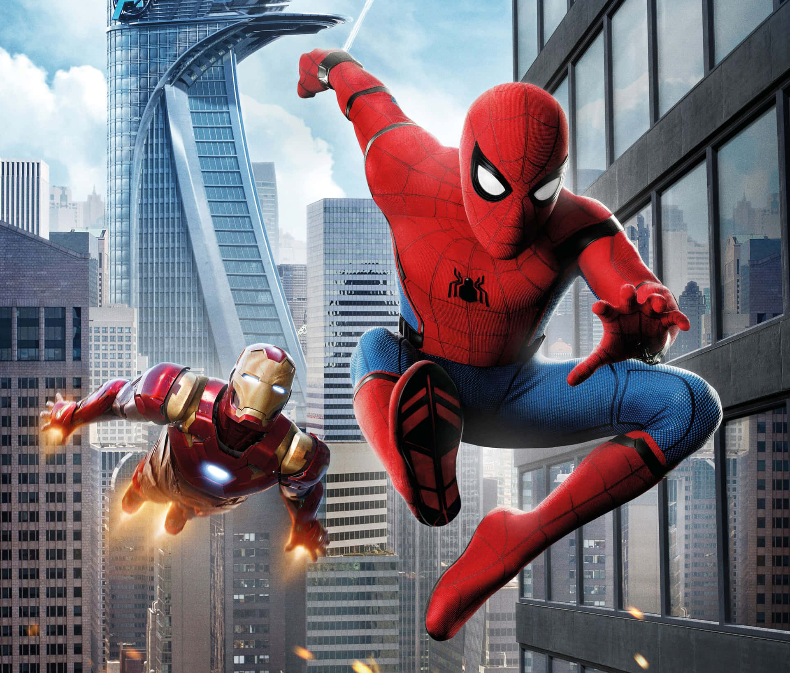

DESCRIÇAO:
Depois de lutar ao lado dos Vingadores, chegou a hora do jovem Peter Parker voltar para casa em Nova York ao lado de sua tia May. Sob o olhar atento do mentor Tony Stark, Peter começa a abraçar sua nova identidade como Homem-Aranha e combate diariamente pequenos crimes nas redondezas. Ele acredita que encontrou a missão de sua vida quando o terrível vilão Abutre surge ameaçando a cidade. O problema é que a tarefa não será tão fácil como ele imaginava.
LANÇAMENTO: 6 DE JULHO 2017
INDICAÇOES:
OUTROS FILMES: Homem aranha longe de casa, homem aranha sem volta para casa